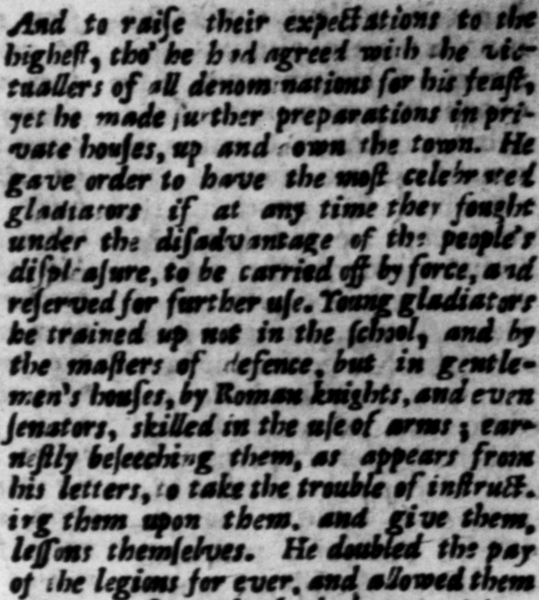

PO SAO 1 | : : ; D.'JULIUS-CESAR. tiis oblocata, etiam domeſticatim a „Gladiatore: notos, ficubi infeſtis ſpectatorĩ bus dimicarenr, vi rapiendos reſervandoſque ma Tirones neque in ludo, ne per laniſtas, fed in domi per equires Romans, ac etiam per ſenatores armorum per itos erudĩebat : precibus enitens, quod —.— ejus oftendicur, ut diſciplinam fingulorum ſaſciperent, ipſique dictatz 2 — datent. Legioniſti ium in perpetuum duplicavit. Frumentum, quoties copia effer, etiam fine modo menſuraque præbuit : ia viritim dedit. ac fin & ted te every ſoldier in hit army deve, er 4 beuſe. 27. Ad ret inendam autem Pompeii neceſſitudinem ac voluntatem, Oftaviam ſororis ſuz neptem, que C. Marcello n erat, cunditione ei detulit. ſilnque filiam e ju: in matrimomum petiit, Fauſto Sullæ deſtinatam. Omnibus vero circa eum, atque etiam parte magna ſenatus, gratuito, aut levi foenore obitrictis, ex reliquo quo. ne ordinum genere vel invitaztos, vel ſponte ad fe commeantes, nberrimo congiario proſequetatur : libertos inſuper, ſervuloſque cujaſque pron: domino parronove gratus quis eſſer. Tum reorum aut oba ratorum, ant prod ige juventrutis ſubſidium uni cum ac prompt iſſim im : nit quas gravior criminugꝭ, vel inopiz luxuriæve vit ur opne« etle dicebat. 28. Nec minore ffiudio reges atque provincias per terrarim orbem alliciebat: ali is caprivo-um millia co ofterens: 2'315 Citrn ſenatus populiqu? auctoritatem quo veſent, grand -d aug — — apon them, and give be bed plenty, without = 22 27. To keep wp an al iance and g under t anding with Pompey, be offercd him in marriage Ofsus his fifter's hier, who bad been married, to C. Marcellus, and deſired bis daughter for bimſ-if, win had bees contrat#ed ts Faun Sy. And took care ts oblige I bout him, and & great part of the ſenate tee, by the loan of money © wm low interefl, or none at all ; and. was very free of his prejents to all ethers, that came to wait upon bum, either upen his imvitation, or of their own accord, not urg lectiat even ſreedmen and ſlaves, thet were favourites with their maſters and patrons, Ani then be wws @ ſure and never-faiving ſuccow to perſons of guile, y. & luxury Har Lo 3 che to relieve them. e leclared there was no par ly ym = cial way. 3 gere-, q um ut ſubveniri poſlet 2 ſe: his plane palam bello civili 28. Kor did be with leſs application endeaveny ts engage in bis ereſt prog ces, ar: provinces, all th: weld overs treu ſome with thimſani; of prieuere, aud ſen unt roms te the aſſiſ⸗ tente of cc rer, without 2 f
